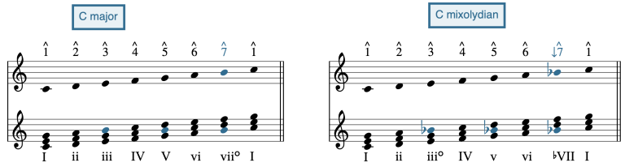
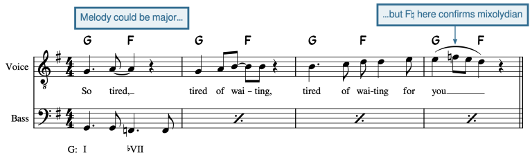
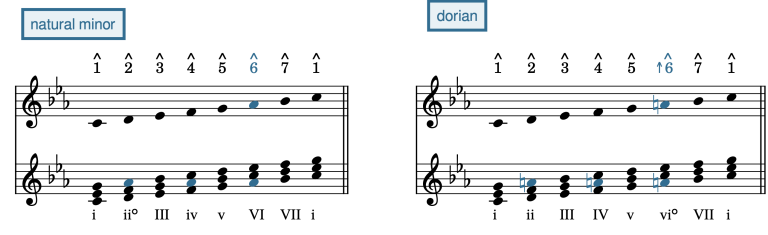
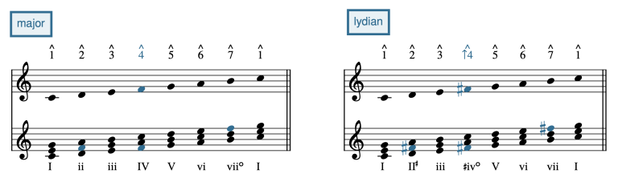
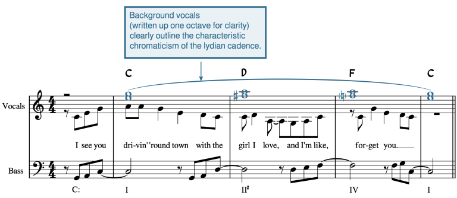
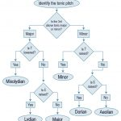

调式：同一组音，不同的中心
打破吉他手最大的误区：调式绝对不是“从第几品开始弹大调指型”。调式 = 音集 + 确立的家（主音）+ 唯一改掉的那个特征音。学会用平行思路掌握 6 个核心调式，并配合持续音与双和弦 Vamp 真正把调式色彩弹出来。
1. 全局地图
2. 逐个概念
① 为什么“D 多利亚 = C 大调从 D 弹”会害死人？
- 是什么
- 音集确实完全一样，但如果你正在
Dm7 – G7 – Cmaj7上“从 D 开始弹 C 大调”，由于和声已经解决回 C，全宇宙听众听到的依然只是 C 大调，完全没有一丁点 D 多利亚感！ - 为什么需要
- 调式由主音（哪个和弦是家）和它周围的音程距离决定。因此实战必须使用平行思路（以同一个主音 A 和 A 大调或 A 小调作比较）。
- 在指板上
- 把 A 持续音打开（在下方实验室直接点“开启 A 持续音”），站在 A 上感受每个音相对 A 的距离，这才是调式！
- 听起来
- 常见误解
- “7 个教会调式就是 7 个新指型盒子。”指型盒子和 C 大调完全重叠！真正需要重塑的是你耳朵对“哪个音是 1、哪个音是特征音”的定位。
② 大调类调式（1-3-5 大三度底色）
- 是什么
- 以同主音 A 大调（1 2 3 4 5 6 7）为参照：
• 伊奥尼亚（Ionian）= 标准大调
• 混合利底亚（Mixolydian）= 大调把 7 降成 ♭7（A7/摇滚感，如《Norwegian Wood》）
• 利底亚（Lydian）= 大调把 4 升成 ♯4（梦幻漂浮科幻感，如《辛普森一家》或 Steve Vai） - 为什么需要
- 混合利底亚是经典摇滚（AC/DC、Rolling Stones、Beatles）使用频率最高的调式；利底亚则是电影配乐和 Fusion 吉他最爱的明亮色调。
- 在指板上
- 记住：特征音在伴奏里往往由第二个和弦直接提供——混合利底亚 Vamp
A – G (I–♭VII)里 G 和弦带着 G 音(♭7)；利底亚 VampA – B (I–II)里 B 和弦带着 D♯ 音(♯4)！ - 听起来
- 常见误解
- “A–G–D 就是 D 大调。”如果 A 是重心反复出现、G 当作回 A 的垫脚石，这就是典型的 A 混合利底亚 I–♭VII–IV。
③ 小调类调式（1-♭3-5 小三度底色）与洛克里亚
- 是什么
- 以同主音 A 自然小调（1 2 ♭3 4 5 ♭6 ♭7）为参照：
• 爱奥利亚（Aeolian）= 自然小调
• 多利亚（Dorian）= 小调把 ♭6 升成 ♮6（略带暖亮、Funky 感，Santana《Oye Como Va》Am7–D9）
• 弗里几亚（Phrygian）= 小调把 2 降成 ♭2（暗黑、中东/金属张力，Am–B♭）
• 洛克里亚（Locrian）= 含 ♭2 和 ♭5，主和弦是减三和弦，极少当整首歌的家。 - 为什么需要
- 为什么《Oye Como Va》的 Am7 后面会接大九和弦 D9（D F♯ A C E）而不是 Dm？就是因为那个大 IV 和弦带来了 F♯（A 多利亚的 ♮6 特征音）！
- 在指板上
- 极简实战法：在熟悉的 A 小调五声上只加一个 F♯ 就是多利亚；只加一个 F 就是爱奥利亚；加上 B♭ 就是弗里几亚风味。
- 听起来
- 常见误解
- “小调歌里出现大 IV 和弦（如 Dm 后面接大 G）说明跑调了。”这是最常见的多利亚和声进行（i–IV）！
④ OMT 判断三步法 & 弗里几亚属音阶
- 是什么
- 听到一段调式进行，严格走 OMT 三步法：
1) 找定主音：主和弦是大三（亮）还是小三（暗）？
2) 听 7 级：大调类是 7 还是 ♭7？小调类有没有和声小调的导音？
3) 抓特征音：大调类有 ♯4 → 利底亚；小调类有 ♮6 → 多利亚、有 ♭2 → 弗里几亚、都没有 → 爱奥利亚。 - 为什么需要
- 进阶彩蛋：把 A 和声小调（A B C D E F G♯）从第 5 级 E 开始弹，得到 E 弗里几亚属音阶（1 ♭2 3 4 5 ♭6 ♭7）——既有弗里几亚 ♭2 又有大三度 3，金属和西班牙风必用！
- 在指板上
- 开启下方实验室的持续音切换 7 种调式，把红色特征音印在手指上。
- 听起来
- 常见误解
- “洛克里亚和弗里几亚听不出来区别。”洛克里亚连 5 级都是降五（♭5），完全失去了五度支撑，像站在悬崖边上；弗里几亚有稳定的纯五度。
3. 交互指板与伴奏实验室
点下方预设快速切换把位与音阶/和弦；点任意一格都能发声，开启持续音即可直接对着指板练习即兴与听辨。
4. 上琴练习
- 同主音 6 调式光谱对照（开 A 持续音）：在本站「指板」或下方实验室开 A 持续音，依次弹伊奥尼亚、混合利底亚、利底亚、爱奥利亚、多利亚、弗里几亚，每次唱出红色特征音。重点验证：按节拍稳定、说得出级数与音名。
- 4 段 Vamp 即兴录音（每段 1 分钟）：录下 Am7–D(多利亚)、A–G(混合)、A–B(利底亚)、Am–B♭(弗里几亚) 四段循环，长音停在特征音上。重点验证：按节拍稳定、说得出级数与音名。
- 五声 + 1 秒变调式（80 BPM）：在 A 小调五声里只多加一个 F♯ 弹在 Am7–D 上；换成 F 弹在 Am–F 上，听一音定调式的奇效。重点验证：按节拍稳定、说得出级数与音名。
- OMT 三步分析 S4 曲目 + 里程碑 ④（录音存档）：分析《Oye Como Va》《Norwegian Wood》《Wherever I May Roam》；打磨 A 调布鲁斯 3 chorus 与一段多利亚即兴录音。重点验证：按节拍稳定、说得出级数与音名。
5. 分歧点对照
| 容易混淆的两面 | 核心区别 | 实战怎么选 |
|---|---|---|
| 相对调式思维 vs 平行调式思维 | 换个起始音记盒子 vs 盯紧大/小调改的那 1 个音 | 平行思路能让你 1 秒听出特色音并马上落到指板上 |
| 多利亚 i–IV (Am–D) vs 爱奥利亚 i–iv (Am–Dm) | 暖亮带希望的小调 (♮6) vs 纯正哀伤小调 (♭6) | 听小调歌里第 4 级是大三还是小三和弦，一秒判断调式 |
6. 读原资料指南
- OMT: Diatonic Modes ↗ — 精读平行定义与 OMT 三步识别流程 已嵌入下方全文
- OMT: Modal Schemas ↗ — 摇滚乐里的经典调式双和弦进行 已嵌入下方全文
- Signals Music Studio ↗ — 用吉他最直观演示各调式特征音的写作方法
📖 本地精要（免跳转直接看：Signals Music Studio（Jake Lizzio）：用吉他和弦进行写歌与听辨调式）
- 【调式靠伴奏立住】单弹音阶听不出调式！必须先用主和弦占满 50% 以上时间立住“家”，再用第二个含特征音的和弦（如多利亚 i–IV、利底亚 I–II、混合利底亚 I–♭VII、弗里几亚 i–♭II）点题。
- 【平行借用和弦配方】在大调歌曲副歌结尾加一个同主音小调借来的 iv（如 C 调里的 Fm）或 ♭VI–♭VII–I（A♭–B♭–C），瞬间获得电影级史诗感与怀旧落差。
平行调式对比与色彩亮暗谱（从最亮到最暗）Modes and the Parallel RelationshipOMT · 自然调式与半音阶引论
Modes and the Parallel Relationship平行调式对比与色彩亮暗谱（从最亮到最暗）
The diatonic modes are scale-like collections of notes with different patterns of half and whole steps. As we have learned previously, scales that share a tonic have a parallel relationship. In this chapter, modes are going to be described using the parallel relationship. Modes will also be described within a continuum of modal brightness; modal brightness: brighter modes sound more like a major scale, while darker modes sound more like a minor scale.所有自然调式都可以看作同一主音出发、只在特定音级做微调得到的音阶（即共享主音的平行关系）。沿着从“最明亮（偏大调）”到“最阴暗（偏小调）”的光谱，构成一条清晰的调式明暗梯度（Modal brightness）（例 1 完整对比了各调式相对于伊奥尼亚大调改变的音级）。
Example 1 ranks the seven diatonic modes in terms of relative brightness and darkness. It also summarizes which scale degrees are altered in relation to the ionian (major) mode, which will be explained in more detail below.例 1. 七种调式的明暗排位光谱与变化特征音一览。
The brightest mode is the lydian mode. The ascending pattern of half and whole steps in this mode is W‑W‑W‑H‑W‑W‑H. Another way to think of this mode is as a major scale but with raised 4̂, whose solfège is fi (↑4̂). Example 2 shows C lydian with solfège.最明亮的王者是利底亚调式（Lydian）：上行公式 W‑W‑W‑H‑W‑W‑H，本质就是**大调 + 升四级 fi (↑4̂)**！例 2 展示了充满太空奇幻漂浮感的 C 利底亚。
Example 2. C lydian with solfège.例 2. C 利底亚音阶与唱名（突出 ↑4̂ fi）。
The next brightest mode is the ionian mode. This mode consists of an ascending pattern of half and whole steps that is the same as a major scale: W–W–H–W–W–W–H. Example 3 shows C ionian with solfège.第二亮的是伊奥尼亚（Ionian）：就是最纯正的普通大调音阶（W–W–H–W–W–W–H，例 3）。
Example 3. C ionian with solfège.例 3. C 伊奥尼亚即 C 大调。
The next brightest mode is the mixolydian mode, with W–W–H–W–W–H–W as the ascending pattern of half and whole steps. Another way to think of this mode is as a major scale but with lowered 7̂. Example 4 shows C mixolydian with solfège.排第三的大调家族成员是混合利底亚（Mixolydian）：公式 W–W–H–W–W–H–W，本质就是**大调 + 降七级 te (↓7̂)**（摇滚与布鲁斯第一招牌调式！例 4）。
Example 4. C mixolydian with solfège.例 4. C 混合利底亚音阶（突出 ↓7̂ te）。
The lydian, ionian, and mixolydian modes are usually considered the brighter (or more major) modes because they contain mi instead of me (unaltered 3̂ instead of lowered 3̂). The dorian, aeolian, phrygian, and locrian modes are usually considered darker (or more minor) modes because they contain me instead of mi (↓3̂ instead of unaltered 3̂).请记住一个极其好用的分类分水岭：Lydian、Ionian、Mixolydian 三者都含有干净的大三度 3̂（mi），因此通通归入明亮/大调色彩阵营；而接下来的 Dorian、Aeolian、Phrygian、Locrian 四位都含有小三度 ↓3̂（me），全部归入阴郁/小调色彩阵营！
The dorian mode is the first darker (or more minor) mode. This mode’s ascending pattern of half and whole steps is W–H–W–W–W–H–W. Another way to think of this mode is as a minor scale but with raised 6̂ (la). Example 5 shows C dorian with solfège:小调阵营里最亮、最带劲的是多利亚（Dorian）：W–H–W–W–W–H–W，本质就是**自然小调 + 还原大六度 la (↑6̂)**！吉它 Funk、桑塔纳拉丁摇滚与金属即兴大爱（例 5）。
Example 5. C dorian with solfège.例 5. C 多利亚音阶与唱名（突出 ↑6̂ la）。
The next darkest mode is the aeolian mode. The aeolian mode’s ascending pattern of half and whole steps is the same as a natural minor scale: W–H–W–W–H–W–W. Example 6 shows C aeolian with solfège.再往暗走一步就是爱奥利亚（Aeolian）：也就是完全原汁原味的自然小调（W–H–W–W–H–W–W，例 6）。
Example 6. C aeolian with solfège.例 6. C 爱奥利亚即 C 自然小调。
The next darkest mode is the phrygian mode. The ascending pattern of half and whole steps in the phrygian mode is H–W–W–W–H–W–W. This is the same pattern as a natural minor scale, but with lowered 2̂, whose solfège is ra. Example 7 shows C phrygian with solfège:更阴暗异域的是弗里几亚（Phrygian）：公式 H–W–W–W–H–W–W，相当于**自然小调 + 降二级 ra (↓2̂)**——这个开局半音带来浓烈西班牙弗拉明戈与重金属厄运风味（例 7）。
Example 7. C phrygian with solfège.例 7. C 弗里几亚音阶（突出开局半音 ↓2̂ ra）。
The darkest mode is the locrian mode. The locrian mode’s ascending pattern of half and whole steps is H–W–W–H–W–W–W. This is the same pattern as a natural minor scale, but with lowered 2̂ (ra) and lowered 5̂, whose solfège is se. Example 8 shows C locrian with solfège:光谱最暗极地是洛克里亚（Locrian）：H–W–W–H–W–W–W，即**自然小调 + 降二 (ra ↓2̂) + 降五 (se ↓5̂)**，因为主和弦直接是极其不稳定的减三和弦（1–♭3–♭5），极少整首歌使用而多见于短句金属 Riff 或半减七过门（例 8）。
Example 8. C locrian with solfège.例 8. C 洛克里亚音阶（唯一主五音也是减五度的极暗调式）。
Each mode can start on any note. For example, one could build a mixolydian collection starting on D♭, an aeolian collection starting on G♭, or a lydian collection starting on F♯. When writing modal collections, be sure to think about your accidentals carefully.同理，12 个半音任意一个都能作这 7 条调式的起点（如 F♯ 利底亚、B♭ 多利亚等），务必算清所需变音记号。
Example 9 shows all of the different modes with scale degrees and solfège, ordered from brightest to darkest (lydian to locrian):例 9 从最亮的 C 利底亚一直排到最暗的 C 洛克里亚（仔细看每次只下降那唯一一个音级就像调暗一档灯光！）：
Example 9. The modes from brightest to darkest, starting on C, with scale degrees.例 9. 同主音 C 的七种调式按由明转暗顺序一次递降全展示。
Listen to Example 9 carefully, observing the difference between the modes.逐条对比试听例 9，感受每一次仅仅改动一个音如何瞬间颠覆情绪。
Open Music Theory · 自然调式与半音阶引论（Introduction to Diatonic Modes and the Chromatic Scale）。原文作者：Chelsey Hamm。Open Music Theory, Version 2，CC BY-SA 4.0。中文为本站翻译，以英文原文为准。图片版权：Brightness and Darkness of Modes © Nathaniel Mitchell is licensed under a CC BY-SA (Attribution ShareAlike) license
自然调式体系Diatonic ModesOMT · 自然调式体系
Diatonic Modes自然调式体系
- Church modes originated in the medieval era, and are classified by their use of the diatonic collection, their final, the relationships of other pitches to that final, and their range.教会调式发端于中世纪，依据自然七声音阶集合、作为核心终音的终结音（Final，近似现代主音）以及音域划分为基础。
- In the 20th and 21st centuries, diatonic modes are also understood as rotations of the major scale, without range requirements, but with the concept of a pitch-class center or tonic.在 20 和 21 世纪，调式常从大调音阶的七次轮转去理解，不再死守传统声乐音域，只需依靠贝斯与伴奏立稳一个核心主音（Tonic）即可。
- Non-Western musical cultures have their own methods of organizing pitch into modes. These "modes" are usually more than simple pitch collections and can include characteristic gestures, embellishments, and protocols for use. Examples include Indian raga, Arabic maqam, Balinese pelog and slendro, Jewish prayer modes, Persian dastgah, and Japanese scales.世界各地的古典与民族音乐均有各自严谨体系（如印度 Raga 拉格、阿拉伯 Maqam 木卡姆、印尼甘美兰、日本五声与波斯体系），往往还带有专属装饰揉弦规范而非仅仅是音阶点阵。
- Modes, conceived in terms of parallel relationships, with an emphasis on the color notes of each mode:最推荐实战演奏的**同主音平行对比记忆表**（牢记每条唯一的特征色彩音）：
- Ionian: Identical to major伊奥尼亚（Ionian）：即常规大调
- Mixolydian: Like major with a ↓7̂混合利底亚（Mixolydian）：大调 + ↓7̂
- Lydian: Like major with a ↑4̂利底亚（Lydian）：大调 + ↑4̂
- Aeolian: Identical to natural minor; no raised leading tone爱奥利亚（Aeolian）：即自然小调（不含升导音）
- Dorian: Like natural minor with a ↑6̂多利亚（Dorian）：自然小调 + ↑6̂
- Phrygian: Like natural minor with a ↓2̂弗里几亚（Phrygian）：自然小调 + ↓2̂
- Modes, conceived in terms of relative relationships:**关系大小调体系的白键速查轮转位置**（仅作入门记忆工具，切忌只在“白键”死转）：
- Ionian: White notes starting on CIonian：C 起手的全白键
- Dorian: White notes starting on DDorian：D 起手的全白键
- Phrygian: …starting on EPhrygian：E 起手
- Lydian: …starting on FLydian：F 起手
- Mixolydian: …starting on GMixolydian：G 起手
- Aeolian: …starting on AAeolian：A 起手
This book covers modes from many different angles. For more information on modes, check Introduction to Diatonic Modes (general), Chord-Scale Theory (jazz), Modal Schemas (pop), and Analyzing with Modes, Scales, and Collections (20th-/21st-c.).全书从四大模块呼应调式：一般导论、爵士和弦音阶、流行调式进行模板、20/21世纪音乐分析。
At the turn of the 20th century, many composers were rethinking the materials of music. This is one reason the term “common practice” is used to distinguish the major-minor music that dominated Western classical music for the 200 years or so prior—something changed around 1900. You’ll also hear talk of the "emancipation of the dissonance" connected to this, and the emergence of atonality out of ever-more-radical chromatic maneuvers. The history of music is much more complex than this simple take, but there is some truth to it: a lot of composers were interested in reinventing what and how they composed, similar to the emergence of abstract art around the same time.自 1900 年前后起，许多作曲家渴望突破过去 200 年传统大小调“属解决回主”的单调框架（犹如绘画走向抽象派）——“不协和音解放”与调式回归共同开启了当代绚丽的和声世界。
The use of modes has a place in all of this, encapsulating many of the ways in which one can broaden the compositional palette. In this chapter, we’ll go through some of the most interesting, famous, and significant options, starting, as many composers did, by looking back to what came before.重新拥抱调式正是当代摇滚、爵士、电影配乐与电吉他拓展声响边界的核心途径之一。
Open Music Theory · 自然调式体系（Diatonic Modes）。原文作者：Mark Gotham and Megan Lavengood。Open Music Theory, Version 2，CC BY-SA 4.0。中文为本站翻译，以英文原文为准。
混合利底亚进行模板（Mixolydian: ♭VII）Mixolydian: ♭VIIOMT · 调式和声模板
Mixolydian: ♭VII混合利底亚进行模板（Mixolydian: ♭VII）
Mixolydian's color note is te (↓7̂), as shown in Example 3. In major-mode pop songs, the ♭VII chord is borrowed from the mixolydian mode. ♭VII typically has dominant function, and you might think of it as a substitute for the traditional major-mode V chord in both the double plagal and mixolydian cadence schemas (Example 4).混合利底亚唯一的特征音是降七级 te（↓7̂，例 3）。在大调底色的流行摇滚歌曲中，直接引入含这个降七音的 ♭VII 大三和弦就是混合利底亚签名动作！此时 ♭VII 常担当柔和摇滚属功能，在双重变格和混合利底亚终止进行中直接顶替传统 V 级（例 4）。

Example 3. ↓7̂ (te) is the color note of the mixolydian mode. Important mixolydian harmonies have that color note in them: v and ♭VII. (iiio is not used.)例 3. ↓7̂（te）是混合利底亚的心脏：凡用到 v 或 ♭VII 和弦都会把这颗音打亮！
Example 4. The double plagal schema and the mixolydian cadence schema are two especially common mixolydian chord progressions.例 4. 最常用的两大混合利底亚进行：双重变格（♭VII–IV–I）与混合利底亚终止/穿梭。
Double plagal双重变格进行（Double plagal）
The double plagal schema, ♭VII–IV–I, which is discussed further in the blues-based schemas chapter, is also a mixolydian schema, due to the major tonic and the ↓7̂ (te).著名进行 ♭VII–IV–I（如 C 调里弹 B♭–F–C——吉他手几乎闭着眼睛都能唱出来的《Hey Jude》尾奏或《Sweet Child O' Mine》结尾！详参布鲁斯衍生模板）因兼备大三主和弦与 ↓7̂ 而带有浓厚混合利底亚气质。
Subtonic shuttle下主音穿梭进行（Subtonic shuttle）

The most distinctive chord progression in mixolydian is the subtonic shuttle, ♭VII–I, or B♭–C in C major (Example 4 above). The subtonic shuttle is used continuously throughout the intro and first verse of "Tired of Waiting for You" by the Kinks (1965), where the instrumental parts shuttle between I and ♭VII throughout, while the melody emphasizes ↓7̂ (te) as an embellishment and melodic goal (Example 5).更纯粹的混合利底亚签名循环就是最极简的双和弦往返（Shuttle）♭VII–I（例如 A 调不断弹 A 与 G 两个强力/大三和弦，例 4）。The Kinks 名曲整段前奏和主歌都稳稳卡在这两个和弦上摇摆，主唱刻意把 ♭7 级当做旋律重心（例 5）。
Open Music Theory · 调式和声模板（Modal Schemas）。原文作者：Megan Lavengood。Open Music Theory, Version 2，CC BY-SA 4.0。中文为本站翻译，以英文原文为准。图片版权：modal_harmonic_function © Megan Lavengood is licensed under a CC BY-SA (Attribution ShareAlike) license；mixolydian © Megan Lavengood is licensed under a CC BY-SA (Attribution ShareAlike) license；tired_of_waiting；somebody_that_I_used_to_know 2 © Megan Lavengood is licensed under a CC BY-SA (Attribution ShareAlike) license；LOTR © Megan Lavengood is licensed under a CC BY-SA (Attribution ShareAlike) license；I don’t like you © Megan Lavengood is licensed under a CC BY-SA (Attribution ShareAlike) license；dorian；get_lucky © Megan Lavengood is licensed under a CC BY-SA (Attribution ShareAlike) license；lydian © Megan Lavengood is licensed under a CC BY-SA (Attribution ShareAlike) license；forget you © Megan Lavengood is licensed under a CC BY-SA (Attribution ShareAlike) license；mode_flow_chart-3 © Sarah Louden is licensed under a CC BY-SA (Attribution ShareAlike) license
多利亚进行模板（Dorian: 小主 i + 大四 IV）Dorian: IV with a Minor TonicOMT · 调式和声模板
Dorian: IV with a Minor Tonic多利亚进行模板（Dorian: 小主 i + 大四 IV）
Dorian is a mode that sounds like minor, but with la instead of le (6̂ instead of ↓6̂), which produces altered harmonies including a major IV chord (compared to the minor iv in minor), shown in Example 10. Using a major IV chord in songs with a minor tonic is the primary marker of a dorian song, which would otherwise sound like it was minor/aeolian. The major IV chord in dorian usually has a subdominant function.多利亚听着类似小调，却用清亮的大六度 la（↑6̂）换掉了自然小调苦涩的降六度 le（↓6̂）——这一字之改把四级小三 iv 奇迹般变亮成了**大三和弦 IV**（例 10）！当你在一首小调歌曲里听见小主和弦旁边配了一个阳光明亮的大 IV（如 Am 旁边配 D7/D，而非常见的 Dm），几乎 99% 就是多利亚！

Example 10. Dorian is distinguished from the natural minor scale by its ↑6̂ (la), which alters the quality of the IV and ii chords. (vi° is not used.)例 10. ↑6̂（la）把四级小三变成了大四级 IV、二级减三变成了小二级 ii——这是识别多利亚的唯一黄金信号！
The dorian mode is especially associated with funk, disco, and its derivative genres, where the dorian shuttle is especially pervasive. One example of many is "Dance, Dance, Dance" by CHIC (1979). Some people who haven't listened to much music from these genres have trouble aurally recognizing the dorian shuttle and hear it instead as ii–V. Listening to a lot of funk and disco should help you learn to hear that "ii chord" as a i chord, even in more ambiguously dorian songs like Daft Punk's "Get Lucky" (2013, Example 11).多利亚是 Funk、Disco 和融合爵士当之无愧的统治级调式（比如 CHIC 名曲《Dance, Dance, Dance》与 Daft Punk《Get Lucky》）。新手因为太习惯大小调的 ii–V，初次听见 Am7–D9 时常会误以为这是“G 大调的 ii–V”，多听多弹 Disco/Funk 就能建立把首个小七和弦稳稳听成“回家主和弦 i”的多利亚耳朵！（例 11）
Dorian shuttle多利亚往返穿梭（Dorian shuttle）
The dorian shuttle alternates between a major IV chord and a minor i chord (Example 12). The overall effect of this progression is one of tonic prolongation. The upper notes of the IV harmony often form a neighboring motion that emphasizes la (↑6̂). A common variation on the dorian shuttle is expanded to i–IV–i7–IV. This further expands the neighboring effect in the upper voices.最经典的即兴 Vamp 莫过于在 **i 和 IV 之间循环拉锯的多利亚穿梭（i–IV）**（例如 Am7 ↔ D9，见例 12）。高音弦声部天然形成小三 i 五音（E）向 ↑6̂（F♯）抬高又回落的顺滑邻音线，扩展一下写成 **i–IV–i7–IV** 更是绝美。
Example 12. The dorian shuttle uses minor i and major IV. It can be expanded to arch up to i7.例 12. 多利亚往返穿梭进行，高声部紧咬着 ↑6̂ 特征音徘徊。
Open Music Theory · 调式和声模板（Modal Schemas）。原文作者：Megan Lavengood。Open Music Theory, Version 2，CC BY-SA 4.0。中文为本站翻译，以英文原文为准。图片版权：modal_harmonic_function © Megan Lavengood is licensed under a CC BY-SA (Attribution ShareAlike) license；mixolydian © Megan Lavengood is licensed under a CC BY-SA (Attribution ShareAlike) license；tired_of_waiting；somebody_that_I_used_to_know 2 © Megan Lavengood is licensed under a CC BY-SA (Attribution ShareAlike) license；LOTR © Megan Lavengood is licensed under a CC BY-SA (Attribution ShareAlike) license；I don’t like you © Megan Lavengood is licensed under a CC BY-SA (Attribution ShareAlike) license；dorian；get_lucky © Megan Lavengood is licensed under a CC BY-SA (Attribution ShareAlike) license；lydian © Megan Lavengood is licensed under a CC BY-SA (Attribution ShareAlike) license；forget you © Megan Lavengood is licensed under a CC BY-SA (Attribution ShareAlike) license；mode_flow_chart-3 © Sarah Louden is licensed under a CC BY-SA (Attribution ShareAlike) license
利底亚进行模板（Lydian: 大二级 II♯）Lydian: II♯OMT · 调式和声模板
Lydian: II♯利底亚进行模板（Lydian: 大二级 II♯）
Fi (↑4̂) is the color note of the lydian mode, which results in a major II chord instead of the minor ii found in major (Example 13). This text refers to this chord as II♯ for clarity, with the sharp sign representing the raised third of the chord.升四级 fi（↑4̂）是利底亚唯一特征色彩音，它会把原本顺阶的小二级 ii 和弦点石成金变成**大三和弦 II**（本书特意记作 II♯，标明其中包含的升四级音，见例 13）。

Example 13. Lydian is like major with ↑4̂ (fi). This results in a major II chord. (iv° and vii are not used.)例 13（完整对照）. 利底亚因含 ↑4̂（fi）使原本小 ii 变成明亮大 II♯（iv° 与 vii 极少出现）。
If II♯ goes to V, as it typically does in classical music, the chord should be understood as as a secondary dominant V/V instead. But in pop tunes, II♯ often leads elsewhere, necessitating the II♯ label.注意分辨：如果 II 级直接强解决进 V 级（比如 D7 → G7 → C），古典分析管它叫迈向 V 的副属和弦 V/V；但流行乐里许多 II♯ 压根不去 V 级而是直接和 I 对撞或走去 IV，这时才是纯粹追求色彩飘浮的利底亚 II♯！
Very few pop songs are truly in the lydian mode all the way through the song, but many major-mode pop songs use a major II♯ chord in place of the typical minor ii, giving a brief lydian flavor while remaining overall in the major mode.真正通篇死守利底亚的流行曲罕见，但在某个片段短暂闪现 II♯ 瞬间把听感拉升到失重太空感非常常见。
II♯ can have either subdominant or dominant function, and each is used in the following two schemas (Example 14).流行中最典型的两种利底亚进行如下（例 14）：
Example 14. The II♯ chord is the characteristic chord of lydian and is used in both of these schemas.例 14. 利底亚两大招牌模板：I–II♯ 来回穿梭，与 II♯–IV–I 半音化解终止。
Lydian shuttle利底亚往返（Lydian shuttle: I–II♯）
The most basic lydian chord progression is a simple shuttle between II♯ and I. Identifying this chord progression correctly can be tricky: because few pop songs are truly in lydian throughout, this II♯ chord is often neutralized later in the chord progression with a IV chord or a ii chord, which means the song is overall in major, but with a brief II♯ chord. This progression can be heard with some alterations in the opening of "Sara" by Fleetwood Mac (1979). "Sara" expands the lydian shuttle to include a Ima7 chord to harmonize an arching melody, and it also uses a tonic pedal underneath the II♯ chord. Later on in the song, the II♯ is neutralized by the use of a doo-wop schema. This is illustrated by Mark Spicer.在 **I 和 II♯ 之间轻轻摆荡的往返进行**（如 C 与 D 放在一起循环，或用主音低音踏板一直踩着 C 弹上面的 D 三和弦——典型即如 Stevie Vai 式英雄旋律或 Fleetwood Mac《Sara》）。如果后半段出现传统 IV 或 ii 和弦，就会把刚才 ↑4̂ 带来的利底亚飘浮色彩消解回普通大调（呼应常见流行模板）。
If the II♯ chord is never neutralized, it's possible that the chord progression isn't really I–II♯, but another shuttle that relates roots by step. For example, Taylor Swift's "Starlight" (2012) has verses that alternate between A and B major chords (begins at 0:26), but they are IV–V in E major, not a lydian shuttle. This becomes clear in the chorus (0:56), which is harmonized with a rotation of the doo-wop schema. The subtonic shuttle discussed earlier in this chapter is another chord progression that relates two major chords by step. Remember that lydian is rare in pop music, and be careful when identifying this progression!也要谨防错判“相邻两个大三和弦”：比如 Taylor Swift《Starlight》主歌在 A 和 B 之间穿梭（E 大调里是 IV–V，而非利底亚），因为副歌立刻落进纯正的 E 大调四和弦框架 里了，同样也不要跟混合利底亚 I–♭VII 搞反方向！
In this progression, II♯ functions as a dominant chord, leading back into the tonic with the half step between fi and sol (↑4̂-5̂).在 II♯–I 里，II♯ 中的 ↑4̂（fi）像一根微弱导音直接往上滑半音进入主和弦的五音 5̂（sol）。

Lydian cadence利底亚终止进行（II♯–IV–I）
The most popular progression using II♯ is the lydian cadence II♯–IV–I, or D–F–C in C major. Notice that the lydian fi (↑4̂) is immediately neutralized by the regular IV chord, replacing it with fa (4̂). This schema also features smooth chromatic voice leading, which may partially explain the appeal of this progression. The clearest example of this schema may be Cee Lo Green's "Forget You" (2010, Example 15).[2]Cee Lo Green《Forget You》（C → D → F → C，即 I–II♯–IV–I）玩出了一条极其高级的内声部下滑线：II♯ 里的 fi（F♯）紧接着在 IV 和弦被还原成 fa（F♮），最后落入 I 的三音 mi（E♮）——F♯→F♮→E 丝般顺滑！（例 15）[2]
[2] "Forget You" is the classroom-friendly version of the more explicit original.（《Forget You》是原曲的电台洁净广播版。）
Open Music Theory · 调式和声模板（Modal Schemas）。原文作者：Megan Lavengood。Open Music Theory, Version 2，CC BY-SA 4.0。中文为本站翻译，以英文原文为准。图片版权：modal_harmonic_function © Megan Lavengood is licensed under a CC BY-SA (Attribution ShareAlike) license；mixolydian © Megan Lavengood is licensed under a CC BY-SA (Attribution ShareAlike) license；tired_of_waiting；somebody_that_I_used_to_know 2 © Megan Lavengood is licensed under a CC BY-SA (Attribution ShareAlike) license；LOTR © Megan Lavengood is licensed under a CC BY-SA (Attribution ShareAlike) license；I don’t like you © Megan Lavengood is licensed under a CC BY-SA (Attribution ShareAlike) license；dorian；get_lucky © Megan Lavengood is licensed under a CC BY-SA (Attribution ShareAlike) license；lydian © Megan Lavengood is licensed under a CC BY-SA (Attribution ShareAlike) license；forget you © Megan Lavengood is licensed under a CC BY-SA (Attribution ShareAlike) license；mode_flow_chart-3 © Sarah Louden is licensed under a CC BY-SA (Attribution ShareAlike) license
听耳三步判断调式（OMT 流程）Identifying Modes by EarOMT · 调式和声模板
Identifying Modes by Ear听耳三步判断调式（OMT 流程）
If you are not used to playing in and listening to modes, it can be daunting to identify and distinguish modes by ear. Here is a step-by-step process for aurally distinguishing all the modes discussed here, illustrated as a flowchart in Example 16.初学时调式容易混？按照下面这套只需 10 秒的三步耳测流程图一步步排除（例 16）：
1. Identify the quality of tonic.第 1 步：听清主和弦（家）是“大”还是“小”？

Listen for the tonic pitch. Then, listen for the whole tonic chord. Is the third of that chord major or minor? This distinguishes the major-ish modes (major, mixolydian, lydian) from the minor-ish modes (minor, aeolian, dorian).先抓出站得最稳像“家”的中心根音，再听那个主和弦三音是明亮大三还是忧郁小三——一刀先把全部调式劈成两半：大三阵营（大调/混合利底亚/利底亚）vs 小三阵营（小调/爱奥利亚/多利亚）。
2. Listen for 7̂ (ti or te).第 2 步：盯紧 7 级音是贴近主音的大七度（ti）还是差一个全音的降七（te）？
Compare the 7̂ to the leading tone (ti) a half step below tonic that we typically hear in minor and major songs. If 7̂ is a whole step below tonic (te), then it's lowered, which means that the song is (at least temporarily) in a mode.如果 7 级距离主音是一个干净全音（降七度），多半进入调式色彩了：
If you heard a major tonic and 7̂ is lowered (te), then you are in mixolydian. 听见了**大主和弦 + 降 7 级 te** → **混合利底亚（Mixolydian）**！
If you heard a minor tonic and 7̂ is raised (ti), then you are in minor. 听见了**小主和弦 + 升 7 级导音 ti**（常见 V→i）→ 常规**和声/传统小调**！
If your mode is not already identified, proceed to step 3.若以上还没定出调式，立刻进入第 3 步找剩余那个特色变音：
3. Listen for other raised color notes—fi (↑4̂) in major, and la (↑6̂) in minor.第 3 步：听大调里的 ↑4̂（fi），或者小调里的 ↑6̂（la）！
If 7̂ did not identify the mode for you, listen for other raised color notes.大七与导音解决定不了的问题，全靠这两个特征音一击命中：
If 4̂ is raised (fi) in a major-tonic mode, you are in lydian. If it is not, you are in major. 大三阵营里听到 4 级升高出奇异失重感（fi）→ **利底亚（Lydian）**；没有异常 → 普通**自然大调**！
If 6̂ is raised (la) in a minor-tonic mode, you are in dorian. If not, you are in aeolian. 小三阵营里听到 6 级意外清亮（出现大 IV 和弦 / la）→ **多利亚（Dorian）**；平淡自然 → **爱奥利亚（自然小调）**！
Open Music Theory · 调式和声模板（Modal Schemas）。原文作者：Megan Lavengood。Open Music Theory, Version 2，CC BY-SA 4.0。中文为本站翻译，以英文原文为准。图片版权：modal_harmonic_function © Megan Lavengood is licensed under a CC BY-SA (Attribution ShareAlike) license；mixolydian © Megan Lavengood is licensed under a CC BY-SA (Attribution ShareAlike) license；tired_of_waiting；somebody_that_I_used_to_know 2 © Megan Lavengood is licensed under a CC BY-SA (Attribution ShareAlike) license；LOTR © Megan Lavengood is licensed under a CC BY-SA (Attribution ShareAlike) license；I don’t like you © Megan Lavengood is licensed under a CC BY-SA (Attribution ShareAlike) license；dorian；get_lucky © Megan Lavengood is licensed under a CC BY-SA (Attribution ShareAlike) license；lydian © Megan Lavengood is licensed under a CC BY-SA (Attribution ShareAlike) license；forget you © Megan Lavengood is licensed under a CC BY-SA (Attribution ShareAlike) license；mode_flow_chart-3 © Sarah Louden is licensed under a CC BY-SA (Attribution ShareAlike) license
⚡ 本模块其余配套课程与工具的本地精要 / 平替
- Scotty West《Absolutely Understand Guitar》（32 课全套免费吉他乐理神课，强烈建议按序看） ↗
📖 本地精要（免跳转直接看：Scotty West 32 课《Absolutely Understand Guitar》全套核心提炼）
- 【指板底层几何】吉他不是 6 根独立的弦，而是一条折叠起来的半音阶尺子；由于 3→2 弦是大三度（4 半音）而非纯四度（5 半音），任何跨过 2、3 弦的音程、和弦或音阶形状都必须往高品方向平移 +1 品。
- 【五指模式（5 Finger Patterns）】CAGED 的本质是同一条大调音阶在指板上的 5 个相邻切片，每个切片内部都装着该调的 I、IV、V 三和弦。
- 【色彩与情绪光谱】把 7 种调式按明亮到阴暗排列（利底亚 → 伊奥尼亚 → 混合利底亚 → 多利亚 → 爱奥利亚 → 弗里几亚 → 洛克里亚），每往右一步正好降一个音级（五度圈逆时针移动一格）。
- David Bennett Piano（用海量摇滚/流行热曲拆解调式、副属与调式互换） ↗
📖 本地精要（免跳转直接看：David Bennett Piano：流行与摇滚金曲背后的和声套路与调式基因）
- 【四大流行循环】I–V–vi–IV（开朗大气）、vi–IV–I–V（叙事伤感）、I–vi–IV–V（复古浪漫）、I–♭VII–IV–I（混合利底亚摇滚双变格）。
- 【调外催泪三剑客】III7（V/vi，如《Creep》《海阔天空》）、iv（平行小调小四级，走 6→♭6→5 半音下行）、♭VI–♭VII–I（马里奥终止 / 摇滚凯旋进行）。
- Fretastic（CAGED / 3NPS 指板音阶高亮 + 内置伴奏循环） ↗
📖 本地精要（免跳转直接看：Fretastic 把位聚焦与伴奏即兴（已完整内置于本站指板与 Jam 室））
- 【本站直接平替】在本站「指板」可切换 CAGED / 五声 5 把位窗口并叠显目标和弦；在「练耳与节奏 → 伴奏循环 (Jam)」可直接播放 8 套伴奏音轨。
- Mick Goodrick《The Advancing Guitarist》（伯克利经典：单弦、双弦、打破指型惯性） ↗
📖 本地精要（免跳转直接看：Mick Goodrick《The Advancing Guitarist》（伯克利吉他圣经）三大练法）
- 【Unitrib（单弦练习）】规定今天只在第 3 弦（或第 2 弦）一根弦上弹完整个大调、多利亚或琶音即兴！没有了跨弦指型拐杖，你被迫真正听见音程距离并学会滑音造句。
- 【相邻双弦与限制练习】规定只在 3–2 弦第 5～9 品这 4×2 个格子里伴奏和即兴 5 分钟——限制越严格，大脑开发的音乐创意越深。
- Guthrie Govan《Creative Guitar》Vol. 1 & 2（现代电吉他练习法、动态与调式即兴思维） ↗
📖 本地精要（免跳转直接看：Guthrie Govan《Creative Guitar》：让电吉他发出“人声说话感”的细节）
- 【推弦三要素】① 推弦前想清楚目标音是谁；② 推弦速度决定情绪（快推干脆、慢推挣扎）；③ 推到顶之后再加揉弦，绝不在半路上盲目乱抖。
- 【打破手指机械模进】不要让手指牵着脑子走，尝试“先用嘴哼一句短旋律，再在琴上原封不动弹出来”，这是治愈机械爬音阶的唯一良药。
- Adam Neely（现代乐理、节奏认知与常见乐理误区辨析） ↗
📖 本地精要（免跳转直接看：Adam Neely：节奏细分底层认知、摇摆比（Swing Ratio）与现代和声）
- 【律动不是黑白分明的网格】真实的 Swing 并非死板的 2:1（66.7%），慢速布鲁斯接近 2:1，中高速爵士/放克往往落在 55%～60% 的微妙弹性区间。
- 【节奏与音高同源】把复节奏（如 3 对 2）加速到每秒数十次就是纯五度音程（3:2 频率比）——节奏稳是一切高级和声能站住的前提。
7. 自测 5 题
答案
A 多利亚；D7 的三音 F♯ 正是 A 多利亚区别于 A 自然小调的唯一特征音（♮6）。
答案
它的主和弦是减三和弦（1 ♭3 ♭5），缺乏纯五度的稳定性，听起来很难落地像家。
答案
D 混合利底亚派认为旋律与前奏强拍中心在 D（I–♭VII–IV）；G 大调派认为进行每次停在 G 上像解决（V–IV–I）。
答案
把小三度 C 换成大三度 C♯，同时补入 2 级 B 与 6 级 F♯（或者直接保留 C 作蓝调过渡音！）。
答案
在 E 持续音上：1 弦 11 品 A♯(利底亚 ♯4) → 1 弦 3 品 D(混合利底亚 ♭7) → 1 弦 1 品 F(弗里几亚 ♭2)。
8. 在歌里听一听
- Oye Como Va（Santana）：Am7–D9 循环，A 多利亚（♮6 = F♯）教科书
- Norwegian Wood（The Beatles）：E 混合利底亚（旋律里显著出现 D♮ = ♭7）
- Wherever I May Roam（Metallica）：E 弗里几亚（主 Riff 紧咬 E–F 小二度摩擦）
9. 带去原资料的 3 个问题
- 按“明亮度（升号增加/降号减少）”把 7 个教会调式从最亮排到最暗是什么顺序？
- 为什么很多 Fusion 或现代吉他手在主音和弦上喜欢“混用”多利亚和爱奥利亚，甚至在一句里同时用上？
- 在和弦不断密集变化的爵士乐里，什么时候还讲“调式”，什么时候其实只是“一个大调里的顺阶和弦”？